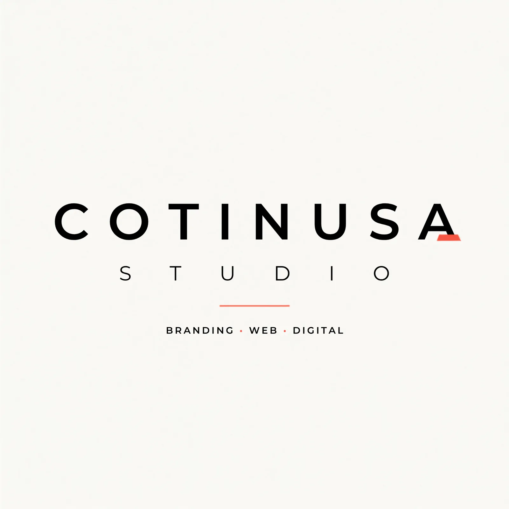
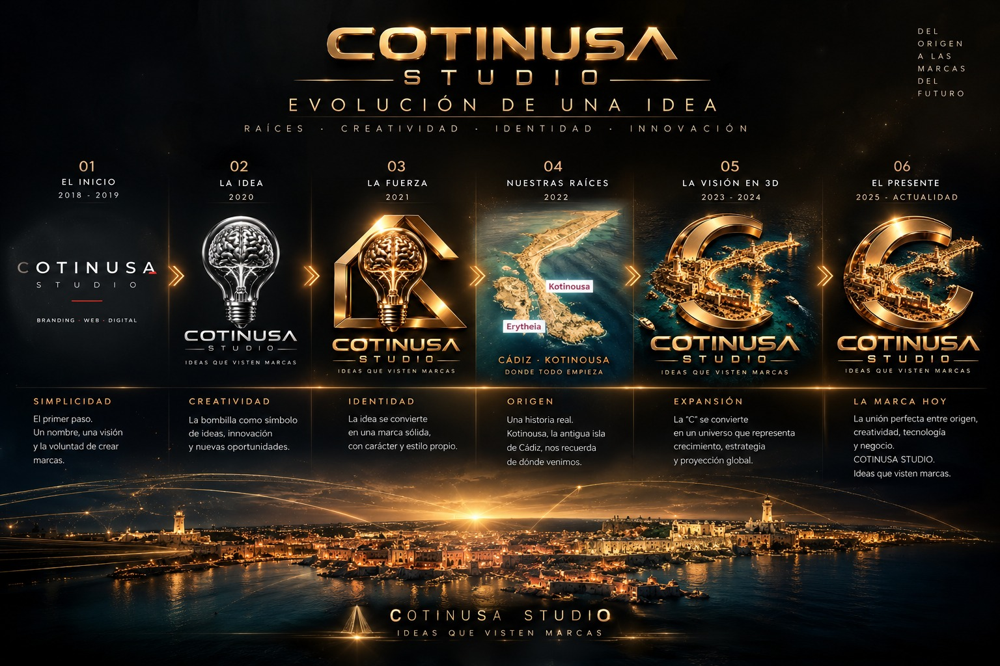
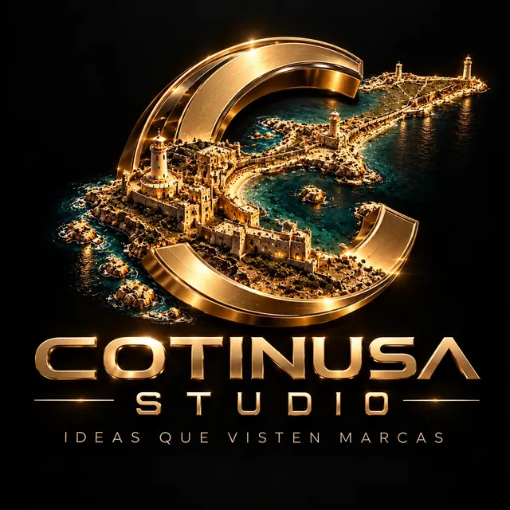
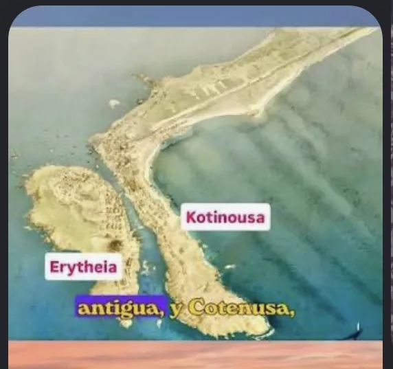
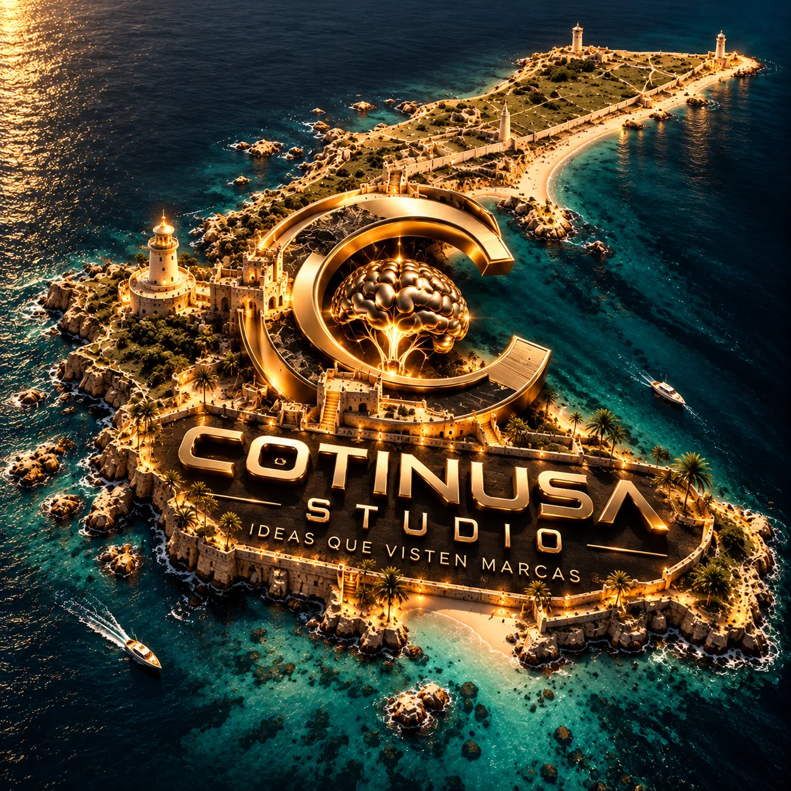

Tipografía blanca: el comienzo de COTINUSA.
COTINUSA · HISTORIA DE UNA IDENTIDAD

Un recorrido visual por las distintas propuestas de identidad y su inspiración en Cádiz. Las fechas que figuran en la composición son ilustrativas y no constituyen una cronología documental verificada.
DEL ORIGEN A LA INNOVACIÓN · SECUENCIA FACILITADA POR EL FUNDADOR

Tipografía blanca: el comienzo de COTINUSA.
La creatividad y las ideas como símbolo.

La identidad incorpora el oro y una presencia más tecnológica.

La referencia a Kotinousa y al territorio gaditano.

La C dorada y el mapa se unen en una composición tridimensional.
La versión final elegida para representar el estudio.